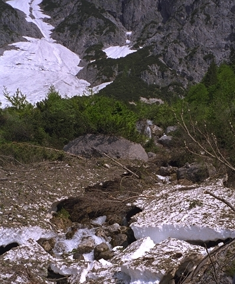

녹아내리는 빙하 (Birnbachloch, Austria)
IPCC 6차 보고서(2022): 1.5°C 목표를 지키려면 남은 탄소예산은 약 400 Gt CO₂. 현재 연간 배출량 40 Gt이니 단순 계산으론 10년, 가속 추세로는 7년입니다.
1.5°C를 넘는 순간 되돌릴 수 없는 임계점들이 연쇄 반응을 시작합니다 — 북극 영구동토 메탄, 그린란드 빙상 붕괴, 아마존 초원화.